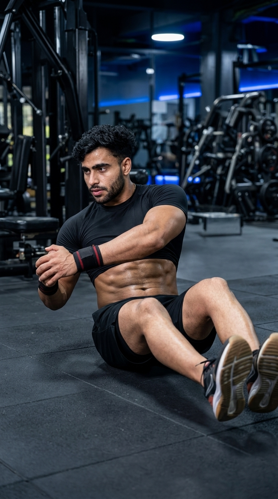

Primary Muscle
Obliques
Build Stronger Obliques and Improve Rotational Core Stability
The Russian Twist is a highly effective core exercise that strengthens the obliques, rectus abdominis, and deep core stabilizers through controlled rotational movement. Whether performed with bodyweight or added resistance, it improves rotational strength, trunk stability, balance, and athletic performance. The Russian Twist is an excellent exercise for developing a stronger, more functional core while enhancing control during sports and everyday activities that involve twisting movements.

Obliques
Bodyweight / Medicine Ball
Beginner to Intermediate
Strength
Discover which muscles drive the Russian Twist and how the supporting muscles work together to produce controlled rotational movement, stabilize the spine, and improve core strength, balance, and athletic performance.
Generate Trunk Rotation While Stabilizing the Torso Throughout Every Repetition
Maintains Trunk Stability and Helps Resist Excessive Spinal Movement During Rotation
Braces the Core, Increases Spinal Stability, and Supports Controlled Rotational Movement
Help Maintain the Seated Position and Support Postural Stability Throughout the Exercise
Discover how the Russian Twist strengthens the obliques, improves rotational power, enhances core stability, boosts athletic performance, and develops better balance, coordination, and functional movement.
The Russian Twist directly targets the internal and external obliques, helping build stronger rotational muscles for improved core function.
Controlled twisting movements develop rotational power that transfers to sports, lifting, and daily activities requiring trunk rotation.
A stronger rotational core improves performance in sports involving throwing, swinging, striking, sprinting, and rapid changes of direction.
Maintaining a stable torso throughout the exercise strengthens the deep core muscles that protect the spine and improve posture.
Keeping your feet elevated or maintaining proper seated posture challenges balance, body control, and neuromuscular coordination.
When combined with progressive overload, proper nutrition, and consistent training, the Russian Twist contributes to stronger, more defined abdominal muscles and improved functional core strength.
Follow these step-by-step instructions to perform the Russian Twist with proper posture, controlled rotation, and a braced core to maximize oblique activation while protecting your lower back.
Sit on the floor with your knees bent and feet flat. Lean your torso back slightly while keeping your spine neutral and your chest up.
Keep your shoulders relaxed and avoid rounding your upper back.
Tighten your abdominal muscles and maintain a stable torso before beginning the rotational movement.
Imagine pulling your belly button toward your spine throughout the exercise.
Slowly rotate your torso to one side while keeping your hips stable. Move your shoulders, arms, and hands together as one unit.
Rotate through your torso instead of simply swinging your arms.
Reverse the movement in a slow, controlled manner and rotate to the opposite side while maintaining constant core tension.
Avoid leaning farther back as you rotate to maintain proper posture.
Alternate sides using slow, controlled repetitions while keeping your core engaged and breathing steadily throughout the set.
Quality rotation and core control are more important than twisting quickly.
Avoid these common technique mistakes to maximize oblique activation, protect your lower back, and perform the Russian Twist safely and effectively.
Swinging your arms from side to side instead of rotating your torso reduces oblique activation and limits the effectiveness of the exercise.
Rotate your shoulders, rib cage, and torso together while keeping your arms aligned with your body.
Slouching during the exercise places unnecessary stress on the lumbar spine and reduces core stability.
Keep your chest lifted, maintain a neutral spine, and brace your core throughout every repetition.
Performing fast repetitions relies on momentum, decreasing muscle activation and reducing control.
Rotate slowly and pause briefly on each side to maintain constant tension on the core.
Forgetting to breathe increases unnecessary tension and can reduce performance during longer sets.
Breathe naturally throughout the movement, exhaling as you rotate and inhaling as you return through the center.
Apply these expert coaching cues to improve your Russian Twist technique, maximize oblique activation, maintain proper posture, and develop stronger rotational core strength with every repetition.
Turn your shoulders and rib cage together instead of simply moving your arms. This places more emphasis on the obliques and improves rotational strength.
Twist your torso, not just your hands.
Tighten your abdominal muscles before every repetition to stabilize your spine and maintain proper posture throughout the exercise.
Brace first, then rotate.
Perform each rotation deliberately to maximize time under tension and prevent momentum from reducing muscle activation.
Slow rotations build stronger obliques.
Keep your chest lifted and your spine neutral while leaning back slightly. Avoid collapsing your upper body as fatigue sets in.
Stay tall while you twist.
Progress from learning the basic rotational movement to developing greater core strength, improved stability, enhanced endurance, and advanced rotational power.
Learn the correct seated position, maintain a neutral spine, and perform slow, controlled bodyweight rotations with proper form.
Posture, core bracing, controlled rotation, and movement quality.
Lift your feet slightly off the floor while maintaining balance and controlled rotational movement throughout every repetition.
Balance, stability, coordination, and core endurance.
Perform Russian Twists with a medicine ball, dumbbell, weight plate, or kettlebell to increase rotational strength and muscular endurance.
Progressive overload, oblique strength, and functional core power.
Progress to decline Russian Twists, cable Russian Twists, stability ball variations, or heavier loads to develop elite rotational strength and athletic performance.
Maximum rotational power, advanced core stability, and sports performance.
Find answers to common questions about the Russian Twist, including proper technique, muscles worked, training frequency, equipment options, and how to safely build a stronger, more stable core.
The Russian Twist primarily targets the internal and external obliques while also engaging the rectus abdominis, transverse abdominis, hip flexors, and lower back stabilizers to maintain posture and core control.
Yes. Beginners should start with bodyweight Russian Twists while keeping their feet on the floor. Focus on slow, controlled rotations before progressing to more challenging variations.
Keeping your feet on the floor provides more stability and is ideal for beginners. Lifting your feet increases the balance challenge and places greater demand on the core.
Perform 2–4 sets of 10–20 repetitions per side, using slow, controlled movement and maintaining proper core engagement throughout each set.
Yes. Once you can perform bodyweight Russian Twists with perfect technique, you can add resistance using a medicine ball, dumbbell, kettlebell, or weight plate to increase the training challenge.
Train Russian Twists two to three times per week as part of a balanced core program, allowing adequate recovery between intense abdominal workouts.
Explore other core exercises that complement the Russian Twist and help you develop stronger abdominal muscles, improve rotational stability, and build complete functional core strength through a variety of bodyweight and resistance-based movements.


Continue strengthening your core with detailed exercise guides covering proper technique, muscles worked, common mistakes, expert coaching tips, and progression strategies designed for every fitness level.